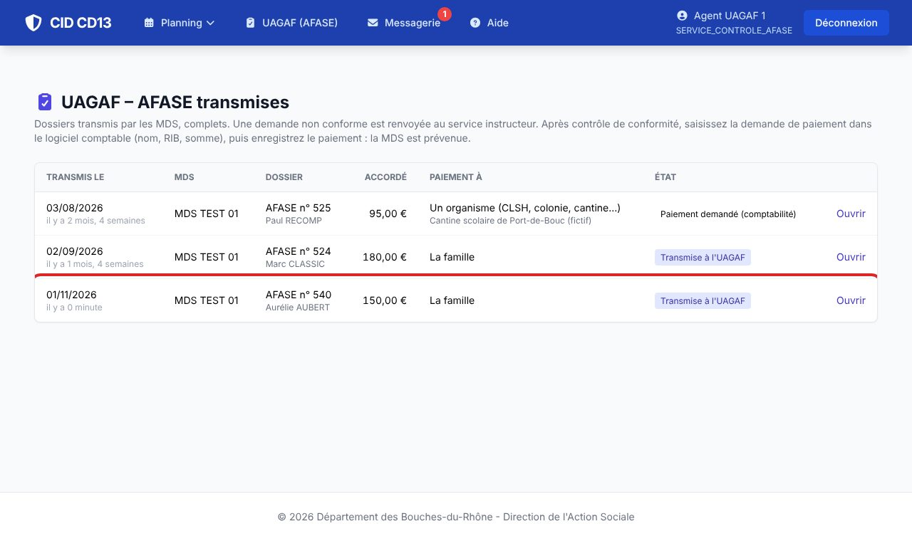
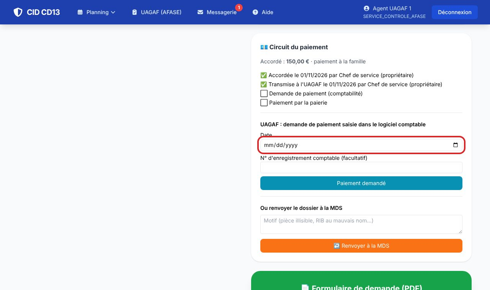
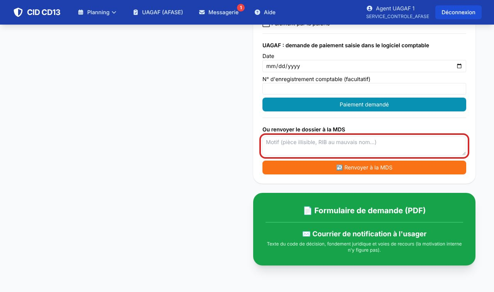
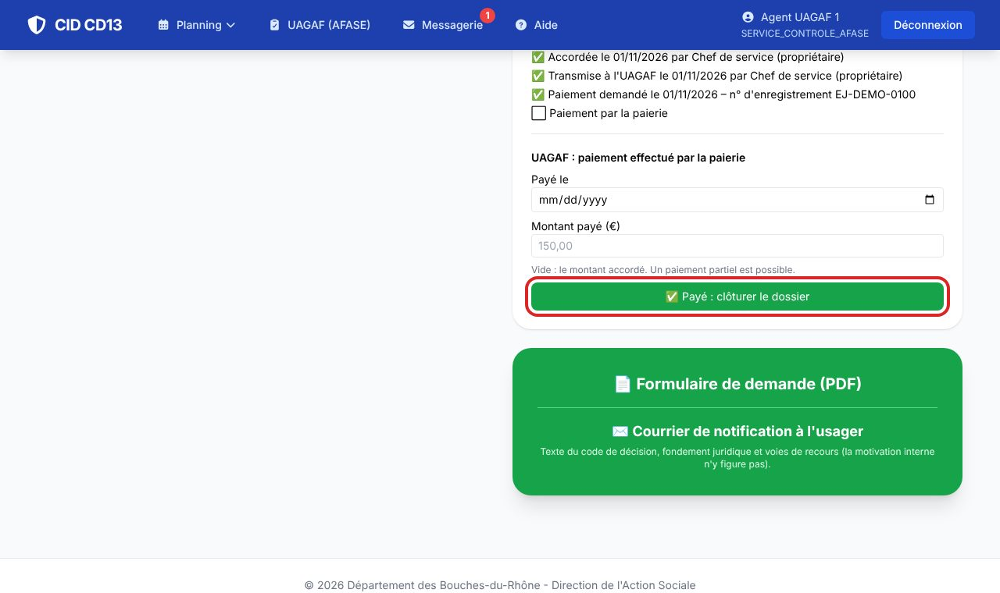
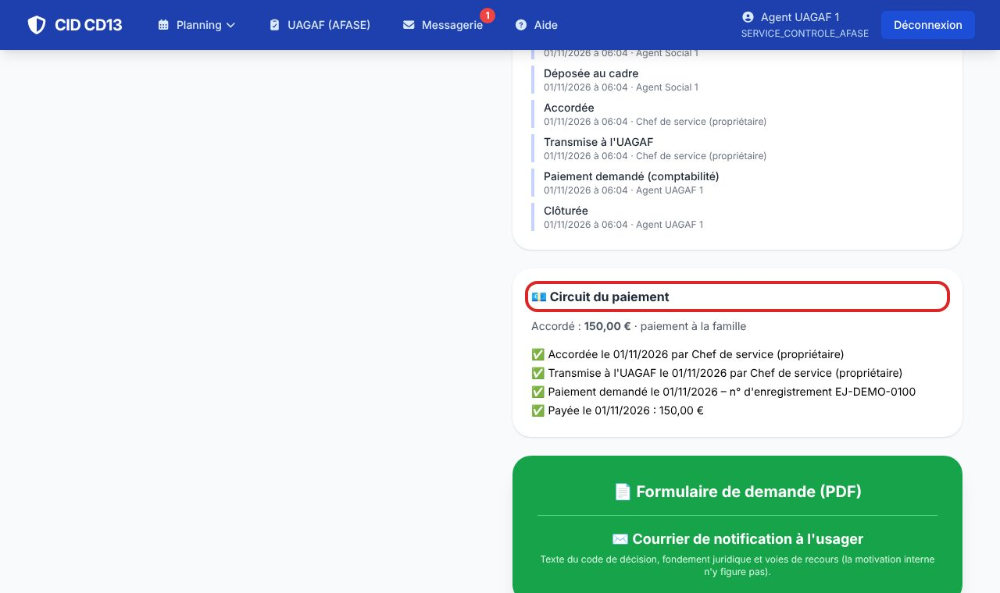

1Ouvrir les dossiers transmis

- Menu UAGAF (AFASE) : les dossiers transmis par les MDS, avec la date, la MDS, le montant, le destinataire du paiement et l'état.
- Cliquez sur Ouvrir : vous voyez le dossier et ses pièces.
2Demander le paiement, ou renvoyer


- Après contrôle, saisissez la demande de paiement dans le logiciel comptable (nom, RIB, somme), puis dans CID : la date et, si vous le souhaitez, le n° d'enregistrement comptable → Paiement demandé.
- Dossier non conforme : indiquez le motif (pièce illisible, RIB au mauvais nom…) et cliquez sur Renvoyer à la MDS. Le cadre est prévenu et le dossier revient à la MDS.
3Enregistrer le paiement


- Quand la paierie a payé : indiquez la date et le montant payé (vide : le montant accordé ; un paiement partiel est possible).
- Cliquez sur Payé : clôturer le dossier. La MDS est prévenue ; le dossier est Clôturé.
Bon à savoir
- Vous ne voyez que les dossiers transmis à l'UAGAF, et leurs pièces : pas le reste des dossiers des usagers.
- Les étapes (transmission, demande de paiement, paiement) alimentent les statistiques des aides de chaque MDS.
Cliquez sur une image pour l'agrandir. Le cadre rouge montre où cliquer ou quoi remplir. Toutes les données affichées sont fictives.